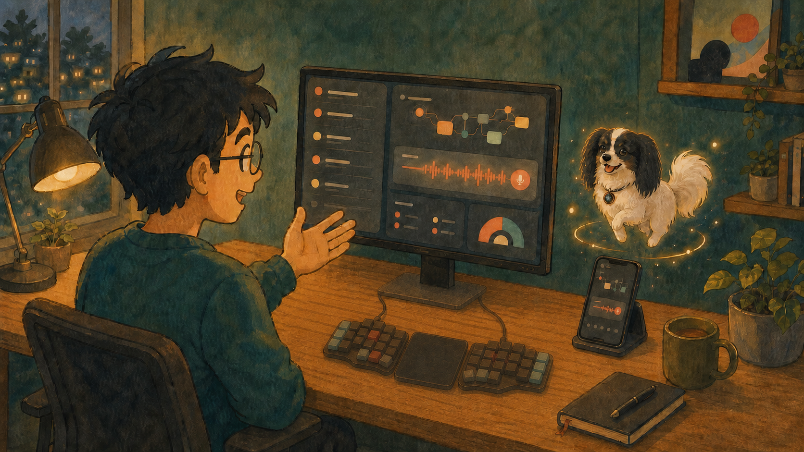

I Wanted to Own the Harness. Then Codex Desktop Won.
By Jory Pestorious | August 9, 2026

I had a different article staged for this URL. The draft was called “Own the Harness, Rent the Intelligence.” I argued that my rules, skills, and tools should move with me when I changed models or subscriptions.
I still believe that because portability is what let me cancel Claude Max without abandoning my rules. Once I moved, I stopped optimizing for the next harness and kept opening Codex Desktop. A few months earlier, leaving Claude would have sounded impossible.
I was a diehard Claude Code fanboy. Each new feature sent me into another Anthropic rabbit hole, from managed-agent “dreaming” to the J-space paper. I kept imagining what the next hook, agent mode, or memory idea might make possible. I still wanted Claude to win even as I opened Codex Desktop instead.
Codex became the window I kept open. My work sat in visible tasks instead of terminal sessions I had to remember. Remote setup took a QR code. I could talk through an idea, pick up the work from my phone, and let a scheduled task return to the conversation where it began.
A little animated dog floated near the edge of my screen and told me when something needed me. I liked it enough to build a custom version of Georgie, my Phalène.
I Was Optimizing the Exit
Terminal Velocity said that a terminal-first workflow raised the ceiling. Then I built Calmhive around Claude Code background jobs, voice, process control, and a TUI.
Claude Code was excellent, but the skills, commands, hooks, and habits I built around it did not travel cleanly. An instruction file may copy to a new agent while its behavior does not. The new harness has different tools, permissions, and ideas about what the instruction means.
I run Oh My Pi, or OMP, with Codex OAuth. The same ChatGPT subscription works in Codex Desktop and the terminal without a separate per-token API bill. I also use DeepSeek V4 Pro and Flash through my OpenCode Go plan.
Claude Max did not give Pi the same clean subscription path. Anthropic directs third-party tools toward API keys or usage credits, which made canceling easier. My rules still live in plain files that work across Codex and OMP, so I can leave when a subscription stops fitting.
I've built the rest myself more than once. One version combined a terminal harness, a provider, MCP servers, editor integration, remote access, a scheduler, notifications, voice, and the code connecting them.
A task started in one tool could not see the context in another. An update broke a path I had forgotten was fragile. The pieces worked, but keeping them connected became its own project. “You can build it yourself” is true in the same way that “you can change your own oil” is true. The missing number is what I wanted to do with that Saturday. The old draft called integration a convenience, but I use the integrated parts every day and reach for the extra control when something breaks.
I Opened Prime Agent's Code
I wanted to try Prime Agent, so I sent the launch post to Federico Ulfo, founder of AI Socratic. He challenged Prime's depth-one RLM and continual-learning claims, then sent me the RLM and Meta-Harness papers plus AI Socratic's February write-up on RLM and Google's ADK experiment. Federico also built Clippy, a beta macOS pet for Claude Code and Codex that does the useful part of Codex pets: it stays quiet until an agent needs attention, and he is looking for feedback.
Prime Agent is closer to OMP's terminal-agent paradigm than to Codex Desktop, so I opened the papers and Prime's source to see whether RLM and /refine improved on what OMP already gave me. The persistent IPython kernel gives the parent agent somewhere to keep and search input, child sessions can run asynchronously, and users can edit or roll back stored state. I still wanted receipts for the RLM result and the claim that /refine improves the agent over time.
Alex Zhang, Tim Kraska, and Omar Khattab introduced Recursive Language Models at MIT CSAIL. An RLM puts long input in an external environment, lets the model inspect and slice it with code, then makes model calls over selected pieces. The clearest separation came on OOLONG-Pairs, which required aggregating pairs across a 32,000-token input. The depth-one RLM used GPT-5 at the root and GPT-5-mini for recursive calls; it scored 58 F1 at an average cost of $0.33 per run. Claude Code 2.0.0 with context offloading and Opus 4.1 scored 6.5 F1 at $2.99.
The OOLONG-Pairs result came from the RLM in the paper. Prime's rlm() bridge spawns a child session and returns its handle. Prime defaults to one recursion level, while OMP's task agents default to two; both limits can be raised. I could not find the same long-context comparison for Prime's implementation.
Prime's memory pitch cites the Continual Harness paper, not Meta-Harness. In the code, /refine asks a model to create, update, or delete prompt notes, memories, skills, and subagent definitions stored in JSON. Prime versions those files and can roll them back.
In Prime's code, /refine writes the model's expectedOutcome into a field named outcome. The stored outcome is a prediction, not the result of a run. /refine never tests the old setup against the new one. I might still get a useful lesson from it, but I cannot tell whether the lesson helped, whether it will return for the right task, or whether it taught the agent something false.
Meta-Harness runs its candidates instead of saving an expected outcome. The proposer can inspect candidate code, scores, and traces before generating the next candidates. Across held-out test sets from three online text-classification datasets using GPT-OSS-120B, the selected Meta-Harness reached 48.6 percent average accuracy versus ACE's 40.9 percent, a difference of 7.7 percentage points. The selected Meta-Harness used 11,400 additional input tokens versus ACE's 50,800. Its task-specific state still resets between tasks. I found no comparable before-and-after test of Prime's /refine, so I'm staying with Codex Desktop and OMP.
What Changed My Work
Ponytail changes how the agent writes code, and Caveman changes how it talks. In its own agentic benchmark, Ponytail ran twelve Haiku 4.5 feature tasks four times per arm with Claude Code 2.1.177 and Haiku 4.5 on a pinned FastAPI and React repository. The benchmark's rounded aggregate fell from 191 added lines per no-skill task to about 88 with Ponytail, a 54 percent reduction. On the date-picker task, Ponytail averaged 23 added lines versus the no-skill arm's 404 by using a native HTML date input.
Tokens fell from 349,000 to about 272,000 per task, a 22 percent reduction. Average cost fell from $0.097 to about $0.078, a 20 percent reduction. Time fell from 69 to about 50 seconds, a 27 percent reduction.
Across five adversarial checks repeated four times, the no-skill, Caveman, and Ponytail arms each passed 20 of 20 runs; the one-line YAGNI prompt passed 19 of 20. The five checks test known guards, not general code security.
Across 82 paired SkillsBench coding tasks, Caveman cut output from the no-skill arm's 592,000 tokens to 542,000, an 8.5 percent reduction. JetBrains enabled Caveman for every reply using Claude Code 2.1.200, Claude Sonnet 5, and low reasoning effort. On task-level tests scored from zero to one, the no-skill arm averaged 0.326 and Caveman averaged 0.311; a paired sign test found no detectable quality difference (p = 0.82). Caveman gives me the trade I wanted: shorter agent output with no detectable loss in completed-task quality.
OMP already contains the plumbing I would otherwise have to build: ChatGPT OAuth, OpenCode Go credentials, provider routing, extensions, and task agents. Its LSP runs through writes and renames, so broken imports surface during the edit. DAP drives a real debugger instead of print-statement debugging, while subagents work in isolated worktrees so sibling agents do not collide before returning structured results.
I can use the same subscriptions, models, and rules from the desktop or terminal. I send work to those child agents every day. I compare harnesses on the same work with the same model and provider, and I do not give one side more context or budget. None has made me switch yet.
I Kept Reaching for the Same App
My last article described the split I was already living: I ran work through the CLI while Codex Desktop kept parallel tasks, local files, browser work, tools, and long-running jobs together in a GUI. Its in-app browser keeps frontend TDD inside the task: Codex can reproduce the failure, change the page, and verify the fix against the rendered UI. When I annotate the page, the exact spacing or styling problem goes back into the conversation. I had built versions of that browser-and-agent loop myself, but I still had to connect the browser to the agent and test runner. In Claude Desktop, chat, Cowork, and design work felt like separate destinations, so I had to carry context between them. Codex leaves the test result beside the code and conversation, so I spend less attention remembering where the work lives.
I connected my Windows machine to Codex Remote by scanning a QR code. The phone view means I can start work, check progress, approve an action, change direction, and review the result. I no longer needed a separate remote-control setup. The phone became another view of the task on my desk.
Twelve Keyboards Later ended with voice as the other input endgame. Codex Voice lets me talk directly to the agent. I can talk until an idea has shape, interrupt when the answer drifts, and send the work into separate tasks before the thought goes cold.
On my phone, I can send work to OMP on my Windows machine and steer it by voice while I am outside or in the bath. Codex invokes OMP through CLI calls and returns the result in the conversation, not a terminal or TUI.
Scheduled tasks return to the same conversation with its context and tools. Together, those features removed the chores of reconnecting tools, repeating context, and checking whether a task needs me.
The Setup I Actually Use
Claude Max is gone. My rules still travel, I can still swap providers, and OMP is one voice instruction away. Codex Desktop stays open because it asks for less of my attention. Georgie waits at the edge of the screen until something needs me.